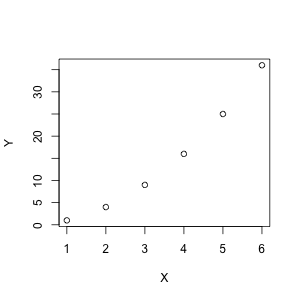

In a Jupyter notebook you can use rmagic which is a part of rpy2.
import rpy2
%load_ext rpy2.ipython
import numpy as np
%R is line magic and returns values to python.
%R X = c(1, 2, 3, 4); mean(X)
array([ 2.5])
a = %R X = c(1, 2, 3, 4); mean(X)
print(a)
[ 2.5]
%%R is cell magic. It returns nothing by default.
%%R
X = c(1, 2, 3, 4, 5, 6)
summary(X)
Min. 1st Qu. Median Mean 3rd Qu. Max.
1.00 2.25 3.50 3.50 4.75 6.00
The flags -w and -h can be used to control size of any graphics (-u specifies the unit).
%%R -w 300 -h 300 -u px
X = c(1, 2, 3, 4, 5, 6)
Y = X**2
plot(X, Y)

This can be done using the -i and -o flags.
Z = np.array([1, 2, 3, 4])
%R -i Z mean(Z)
array([ 2.5])
%R -o W W = Z * mean(Z)
array([ 2.5, 5. , 7.5, 10. ])
Use %Rpull to pull back variables from R.
_ = %R x = c(1, 2, 3.8); y = c(6, 7, 8); z = c('a', 'b', 4)
%Rpull x y z
print(x)
print(y)
print(z)
[ 1. 2. 3.8]
[ 6. 7. 8.]
['a' 'b' '4']
Use %Rget to pull back objects.
dtype=[('x', '<i4'), ('y', '<f8')]
data = np.array([(1, 40.5), (2, 31.5), (3, 26.1), (4, 53.4)], dtype=dtype)
%R -i data
%Rget data
| x | y | |
|---|---|---|
| 1 | 1 | 40.5 |
| 2 | 2 | 31.5 |
| 3 | 3 | 26.1 |
| 4 | 4 | 53.4 |
If you spot any errors please let me know on twitter.